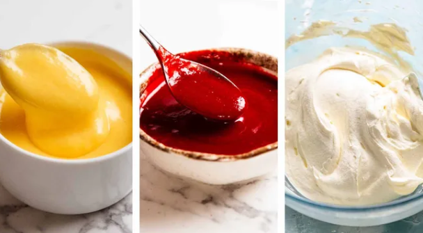
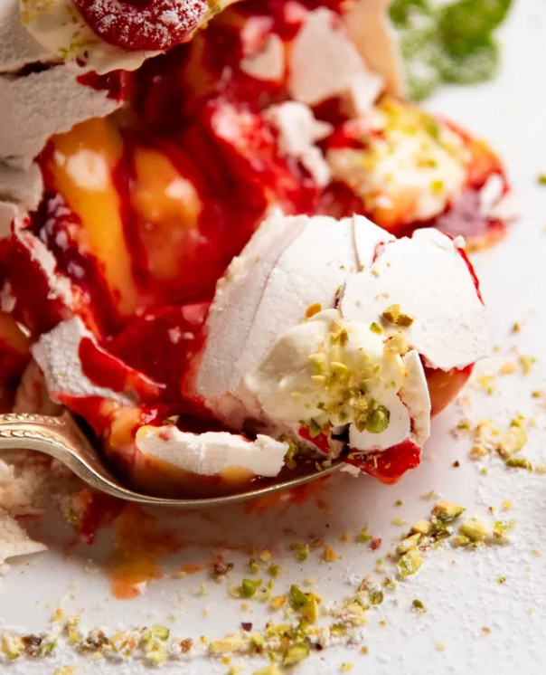

What Pavlova Bombs taste like
Entertainment factor aside, the flavour and texture combination here is stellar. You've got the sugary meringue shell and marshmallow insides, then fruity berry tartness from the Raspberry Coulis and silky-smooth custardy tang from the lemon curd. Plus, whipped cream of course!!! Is it really a Pav without whipped cream?? You can fill it with anything that can be poured or stuffed inside: passionfruit pulp, mango puree, chopped berries, chocolate syrup, salted caramel… CAN YOU IMAGINE! As impressive as they look, they are surprisingly straightforward to make. You just shape the pavlova into a dome shape, punch a hole in the base and fill using a piping bag or just pour in the hole. Then plug the hole with cream, invert, and serve!
Ingredients for Pavlova Bombs
The Pavlova Bomb shells need to be started at least 5 hours before serving as they require 1 1/2 hours in the oven then 3 hours to cool in the turned off oven (to fully dry out and set). I typically make them the night before then leave them in the oven overnight while I sleep, then store in an airtight container until required.
1.INGREDITENS FOR PAVLOVA BOMBS
Egg whites - We need 80ml / 1/3 cup of egg whites which is approximately 3 to 4 large eggs. Using the right amount for Pavs really matters, given it is the key ingredient, so we need to measure rather than relying on “3 eggs”. Unfortunately chickens are extremely selfish and they don't lay exactly the same size eggs every time. Caster sugar (superfine sugar) - This is finer grains than regular white sugar so it dissolves more easily. Usually I say it's ok to use regular white sugar but for pavs, I highly recommend using caster sugar because if the sugar doesn't dissolve fully, you end up with sugar crystals on the edges. Cornflour (cornstarch) and vinegar helps make the pavlova more structurally stable and strong so it won't crack or collapse which is a common problem with a large traditional pavlova. Though less of a risk with mini ones, why risk it when we can take this easy precautionary measure?
2.PAVLOVA BOMB FILLINGS
I filled these Pavlova Bombs with Lemon Curd and Raspberry Coulis, both of which balance the sugary shell with tang and berry brightness and bring traditional Pav fruitiness to this dish.
Plus cream, of course! It is not a Pavlova without the presence of cream!

Here are the ingredient photos, so you can see at a glance how few ingredients are required:
You don't have to use raspberry coulis and lemon curd! You can use anything that can be piped, poured or stuffed into a 1.25 cm / 1/2″ hole.
